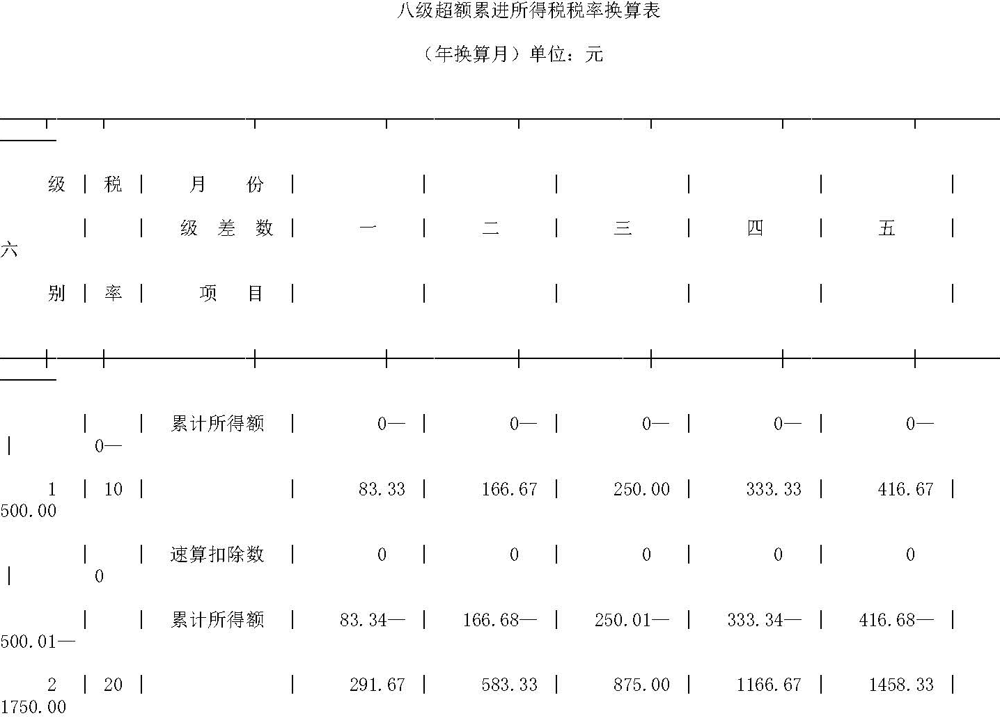
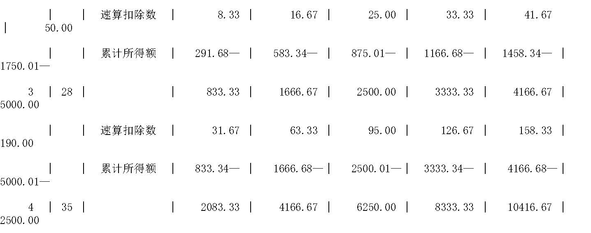
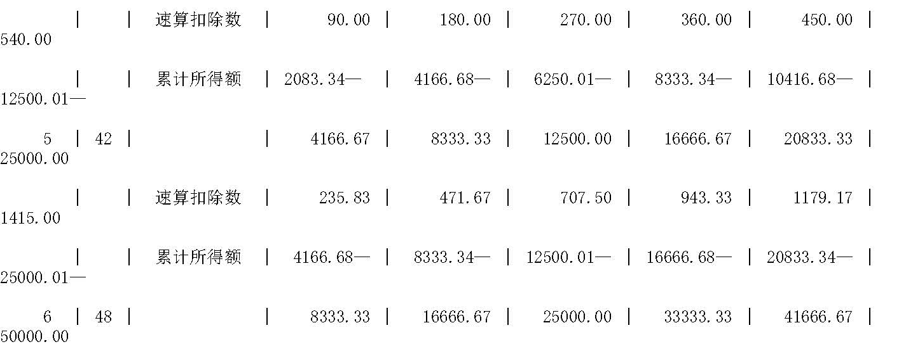
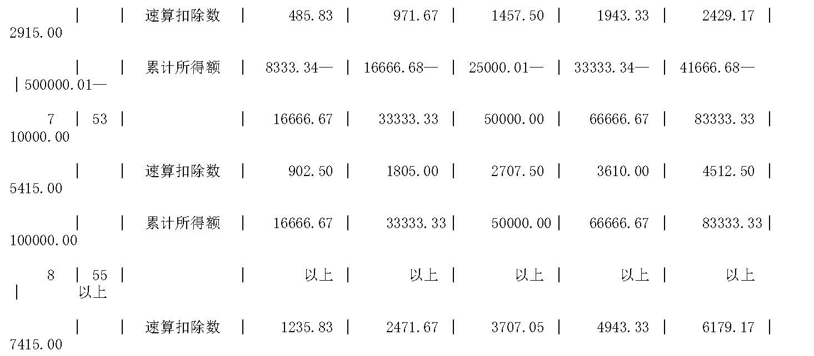
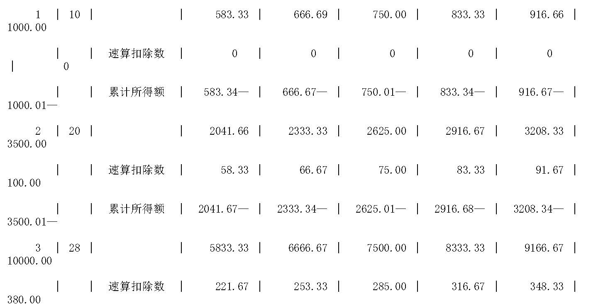
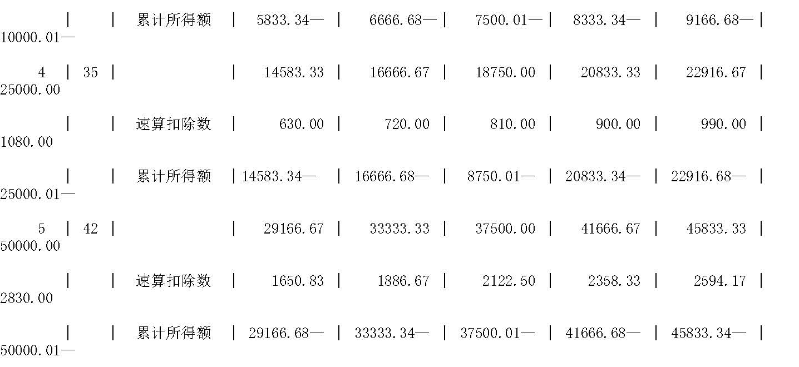
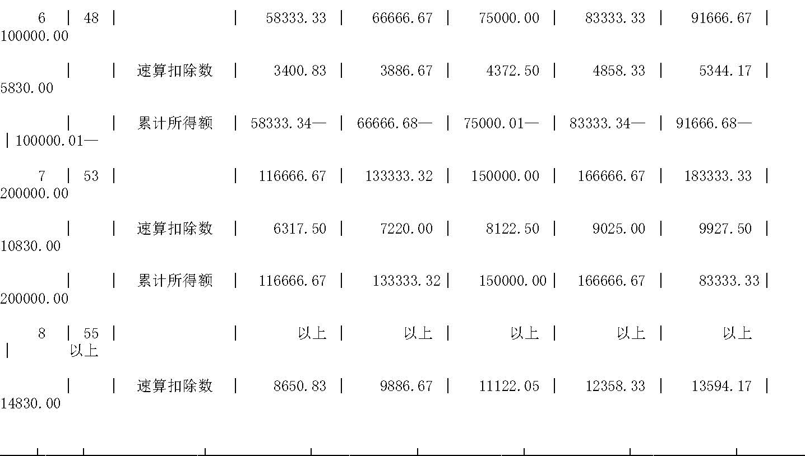
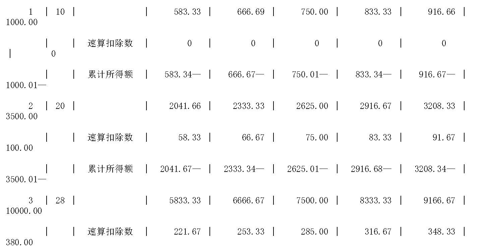
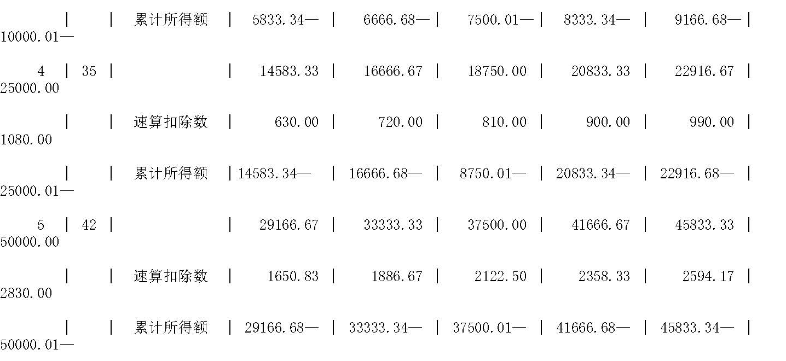
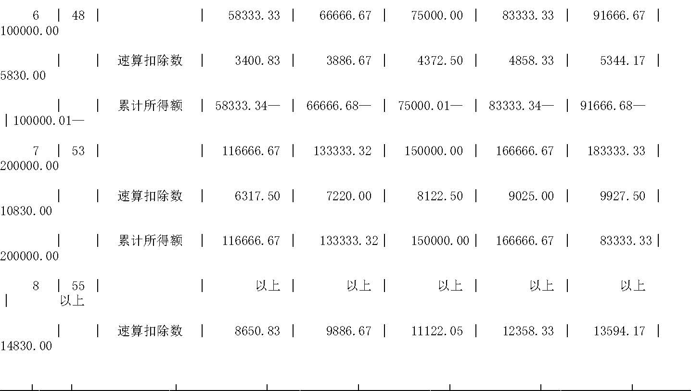

|
资料名称：中华人民共和国国营企业所得税条例（草案）实施细则
|
| 手机阅读请扫我 |
|
财政部 各省、自治区、直辖市人民政府（不发西藏），各计划单列市人民政府，加发南京、成都市人民政府，国务院各部委、各直属机构：
财政部
中华人民共和国国营企业所得税条例（草案）实施细则 总则 第一条 根据《中华人民共和国国营企业所得税条例》（草案）（以下简称《条例》）第二十二条的规定，制定本实施细则。 第二条 《条例》第一条规定的国营企业所得税征收范围，包括企业主管部门、公司、行政、事业单位、部队和团体所属的实行独立经济核算，从事生产经营的全民所有制企业。 第三条 《条例》第二条所称“实行独立经济核算的国营企业”，是指在工商行政管理部门办理工商登记，在银行开设结算帐户，建立帐簿，编制财务会计报表，独立计算盈亏的企业。 第四条 《条例》第二条第二款所称“联营企业先分配所得”，是指参与联营的全民所有制性质的公司、企业、行政、事业单位、部队和团体，从联营企业分得的利润。所有这些单位分得的利润，均应依照《条例》规定，缴纳所得税。 第五条 《条例》第三条所称“应纳税所得额”，包括来源于中国境内外的全部生产经营所得和其他所得。 第六条 国营企业所得税的适用税率，按大中型、小型企业分别确定。大中型企业适用55%的固定比例税率；小型企业适用八级超额累进税率。 第七条 国营企业所得税，由税务机关按照《条例》和本实施细则规定的管理权限负责征收管理。 第八条 国营企业所得税的纳税年度，是指公历每年一月一日起，至十二月三十一日止。 计算依据 第九条 《条例》第一条所称“生产经营所得”，是指从事物质生产、交通运输、商品经营、劳务服务和其他营利事业取得的纯收益。
第十条 纳税人在计算应纳税所得额时，允许扣除下列项目；
第十一条 纳税人在计算应纳税所得额时，下列各项支出，不得计入成本、费用、营业外支出：
第十二条 《条例》第三条所称“国家允许在所得税前列支的税金”，是指缴纳的产品税、增值税、营业税、资源税。 第十三条 应纳税所得额的计算公式如下：
第十四条 联营企业在缴纳所得税前先分配利润的，投资方应按本实施细则第四条的规定，将分得的所得并入本企业、单位的所得或就分得的所得部分计算缴纳国营企业所得税；对就地先缴纳国营企业所得税，后分配利润的，根据投资各方所持税务机关的纳税证明，企业分得的税后利润免纳国营企业所得税。
第十五条 按照国家规定，国营小型企业划分标准如下：
第十六条 小型企业一律按一九八三年的有关数据划分。但对一九八三年实现利润，应相应调整由于变动产品税税率、增值税税率、营业税税率以及开征资源税而增减的利润，并以调整后的余额为准。 第十七条 下列企业不区分大中、小型，一律按照《条例》规定的55%的固定比例税率缴纳：
第十八条 下列企业、单位不区分大中、小型，一律按照《条例》规定的八级超额累进税率缴纳：
减税免税 第十九条 对纳税人一九八三年实现利润，应相应调整由于变动产品税税率、增值税税率、营业税税率以及开征资源税而增减利润后的余额，不足核定合理留利的微利企业，暂免征收所得税三年。 第二十条 行政、事业单位、部队、团体附属企业和收入，凡作为抵顶事业费支出的，暂免征收所得税；不作为抵顶事业费支出的，应依法征收所得税。 第二十一条 对商办工业（包括粮办工业）专门生产酱油、醋、豆制品、腌腊制品、酱、酱菜、糖制小食品、儿童食品、小糕点、果脯蜜饯、果汁果酱、干菜调料（不包括味精）和饲料加工企业，在规定期限内，按适用税率计税后减半征收所得税。
第二十二条 《条例》第五条所称“纳税人遇有特殊情况”，是指纳税人遇有风、火、水等自然灾害。需要减税、免税的，由税务机关按照《条例》规定批准权限，给予一次性或定期的减、免税。减免税期满后，一律恢复征税。 第二十三条 税务机关核定减免税，一般采取减免一定的所得税额的办法。对已按行业减征所得税率的大中型的民贸企业、建筑安装企业、电影发行放映公司以及文教出版系统企业和其他文教企业，可采取按统一的所得税税率计税后，再减按一定比例的办法。减按一定比例的计算办法如下：
第二十四条 凡需要减、免所得税的，属于缴纳调节税的企业，按减、免税程序，应先减、免调节税，经减免调节税仍不足的，可相应减、免所得税。 第二十五条 按照《条例》第六条规定，“纳税人在某一年度发生亏损的”，按照国家规定的程序报经批准后，可以从下一年度的所得中，给予一定数额抵补。一年抵补不完的可结转次年继续抵补，但连续抵补的期限，最长不得超过三年。抵补后有余利的，应按规定缴纳所得税。
第二十七条 纳税人按期预缴所得税额，可以按本期计划利润或上期应纳税所得额占产品销售收入的比重求出本期应纳税所得额计算缴纳。
第二十八条 纳税人经营期不满一年的，按照实际经营期间的应纳税所得额，和本实施细则第二十六条规定的计算公式，计算缴纳所得税。 第二十九条 税款的入库期限，按日、按旬、按半月预缴的，应在纳税期满后三日内缴纳完毕，如遇星期日或法定假日，可以顺延，但当月最后一期的税款须当月缴纳，不得跨月。按月预缴的，应于当月底以前缴纳完毕。
第三十条 《条例》第八条规定，国营企业所得税年终汇算清缴。纳税人应于年度终了后三十五日填报纳税申报表，少缴的税款补交入库，多缴的税款经税务机关核实后办理退库手续。 第三十一条 纳税人发生纳税义务，而不能在规定期限内申报纳税的，由税务机关按其产品销售（营业）收入总额，参照上期的销售利润率核定其应纳税所得额和应纳税额，并限期缴纳。 第三十二条 纳税人缴款办法，由当地税务机关按不同情况，在下列办法中，核定一种：
第三十三条 《条例》第九条第一款规定“跨地区经营的企业，按其隶属关系回原地缴纳”，是指经营场所在外地的企业，由原地区投资或举办的企业、单位向所在地税务机关申报缴纳所得税。 第三十四条 纳税人开业、联营， 应自生产经营开业之日起三十日内，持有关部门的许可证件向当地税务机关办理纳税登记。
监督和奖惩 第三十五条 纳税人在纳税年度内，不论经营情况如何，都应当按照规定期限，向当地税务机关报送所得税申报表、会计报表以及财务计划和有关资料。报送报表期限的最后一日，如遇公休假日，可以顺延。 第三十六条 纳税人按照《条例》第九条第三款规定集中纳税的，应在纳税年度内除向财政部税务总局报送所得税申报表、会计报表以及财务计划和有关资料外，其所属企业应向当地税务机关报送会计报表，当地税务机关有权进行监督、检查。 第三十七条 各级主管部门向企业下达的财务计划以及月、季、年度汇总的财务决算报表，在向有关部门报送的同时，应报送同级税务机关一份（中央主管部门向税务总局报送）。其中向企业下达的财务计划，抄送企业所在地税务机关一份。 第三十八条 计算国营企业所得税滞纳金起止日期，应当从税务机关规定的纳税期限届满之次日起到缴税的当天止，不扣除节假日。 第三十九条 税务机关对纳税人的应纳税所得额和应纳税额，应按照《国营企业成本管理条例》和国营企业财务制度规定进行审查、核定。如发现企业有虚列成本、乱摊费用、瞒报收入、截留利润以及擅自提高开支标准、扩大开支范围等违反财务制度和违反财经纪律行为的，税务机关有权按照规定调整其应纳税所得额，限期追补少缴的税款。对情节严重的，可酌情处以应纳税款一倍以下的罚款。 第四十条 税务机关派员对纳税人的生产经营情况以及财务会计和纳税情况进行检查时，应出示证件并负责保密。 第四十一条 《条例》第十九条所称“偷税”、抗税“的解释如下：
第四十二条 纳税人主动自查补报错漏税款，只补税不处以罚款，不加收滞纳金。 第四十三条 纳税人违反本实施细则第三十四条、第三十五条、第三十六条规定的，处以五千元以下的罚款。 第四十四条 税务机关根据《条例》和本实施细则的规定，对纳税人处以罚款时，须经县以上（含县）税务机关批准，并填发违章处理通知书。 第四十五条 纳税人根据《条例》第二十一条的规定，对纳税事项申请复议时，应在当地税务机关规定的纳税期限内缴清税款后十日内，向上级税务机关提出。纳税人对上级税务机关复议不服时，应在接到答复的次日起三十日内，向人民法院起诉，超过期限的，视为纳税人放弃起诉权利，税务机关应即依照复议决定执行。 附则 第四十六条 本实施细则的解释权，属于中华人民共和国财政部。 第四十七条 本实施细则从《条例》公布实行之日起实施。 附表：八级超额累进所得税税率换算表 



（2017.10.29更新） |
 


注：计税时，可根据月份累计应纳税所得额，乘适用税率，减速算扣除数，减累计已缴纳和税额，即为本月应缴所得税额。



注：计税时，可根据月份累计应纳税所得额，乘适用税率，减速算扣除数，减累计已缴纳和税额，即为本月应缴所得税额。|
声明 本资料来源于网络，版权归原作者所有，若需引用请注明出处，引用前请与原件进行核对，请勿用于商业用途！ |
|
声明 本资料来源于网络，版权归原作者所有，若需引用请注明出处，引用前请与原件进行核对，请勿用于商业用途！ |
| 分享按钮 |
|
微信扫一扫前往微店 |
|
|
|
|